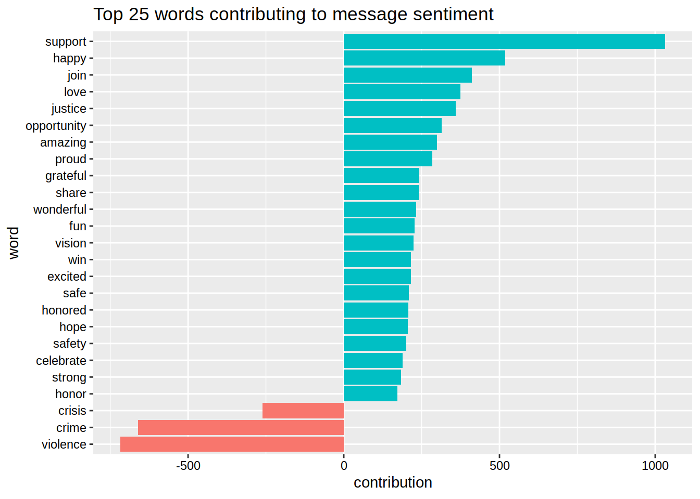
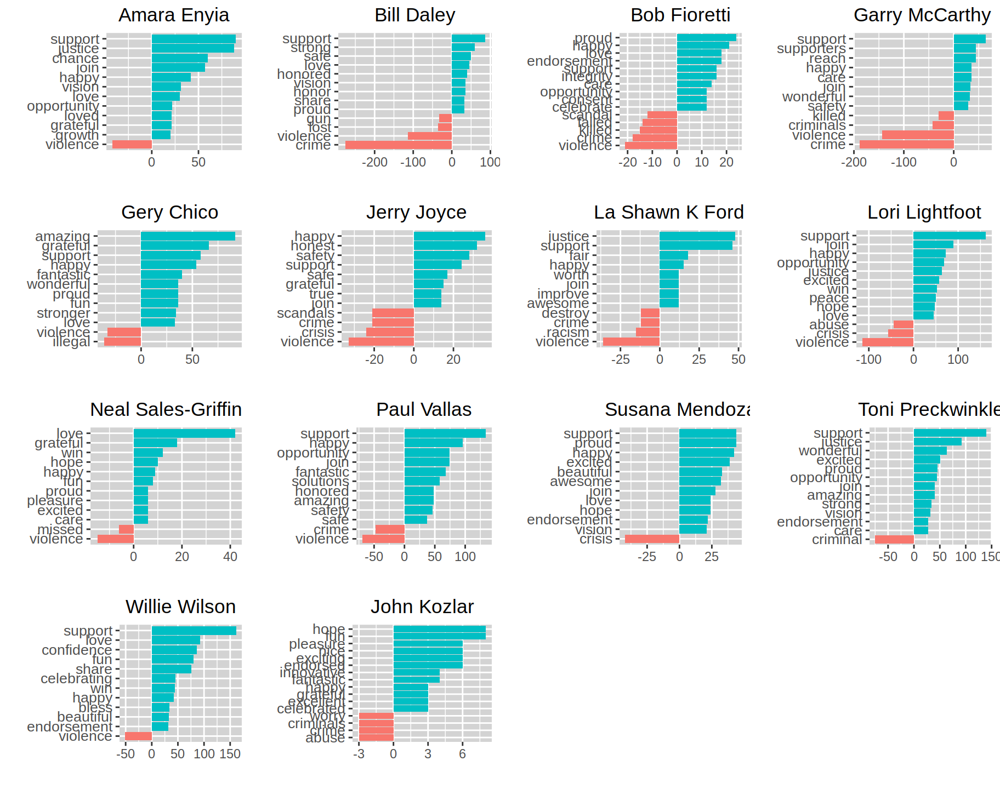

Chapter 7 Sentiment Analysis
One way to evaluate the messaging done by candidates is to gauge the emotion and opinion behind their statements. In this section we will be examining aspects of the sentiment of each candidate’s messages throughout their campaigns.
7.1 How we will measure sentiment
We will use the AFINN Lexicon, from Finn Arup Nielsen to examine the terms used in the candidate’s tweets. Detailed information on the lexicon can be found in the paper A new ANEW: evaluation of a word list for sentiment analysis in microblogs?, proceedings of the ESWC 2011 Workshop. A copy of the paper can be found here. Simply put, the lexicon rates terms used as being either “positve” or “negative”. The score for each term is within a range of -5 (very negative) to 5 (very positive).
7.2 Average term score by candidate
For example, we can look at the average score for each term used by the candidates in their twitter messages during each of their campaigns. The code below with take each term used by the candidates, assign a score from the AFINN Lexicon for each term it shares in the candidate’s tweet, multiply the scores by the number of times each term is used (we’ll call this contribution to sentiment), and divides that result by the total number of terms appearing in the messages.
The results show that Willie Wilson is, by far, is the most “positive”, averaging a score of over one per term used. Candidate Wilson is followed by John Kozlar and Paul Vallas. The least “positive” on average is Garry McCarthy.
7.3 Highest Contributions to Sentiment
At this point, you might be asking what are the words that are making these messages positive or negative. The following code will extract the 25 words that, from all of the timelines by their frequency of use and assigned score, are most prominent in contributions made to overall twitter message sentiment. This will include both prominent positive and negative words.
message_contributions <- cleaned_text2 %>% inner_join(get_sentiments('afinn'),by='word') %>% group_by(word) %>%
summarise(occurences = n(),contribution = sum(score))
message_contributions %>% top_n(25,abs(contribution)) %>% mutate(word=reorder(word,contribution)) %>%
ggplot(aes(word,contribution,fill=contribution > 0))+geom_col(show.legend=F)+theme(axis.text = element_text(color='black'))+coord_flip()+ggtitle('Top 25 words contributing to message sentiment')
As you can see, the words “suport” and “happy” are the most prominient of the positive words contributing to sentiment. Meanwhile, “crime” and “violence” and the most prominent negative words.
7.4 Top Contributions to Sentiment by Candidate
We can do something similar for each of the candidates. Below are the plots for each candidate indicating the top twelve words for their timelines by their contribution to sentiment (again, score times number of times used). If there are ties in contribution, all tied words are used.

One thing to note here is that for Sales-Griffin and Kozlar, their lack of twitter activity during their campaign introduces a higher chance for ties. Hopefully, this will be resolved with the data from February. The results also give a hint as to why Willie Wilson and Garry McCarthy are at the extremes in terms of average score per term.
7.5 Highest (and Lowest) Average Scoring Tweets
Besides looking at individual words, we can assess the average sentiment score for a given tweet. In the code below, we can ascertain the average score per term tweet for each tweet in the dataset. We’ll try to take the top scoring tweets, as well as the lowest scoring tweets. In a later version of this document, I plan to include average scores with the tweets.
Below are the tweets with the top average sentiment scores.
| candidate_name | status_id | text |
|---|---|---|
| Paul Vallas | x1077629743841857538 | #TeamVallas & I wish you and yours health and happiness this Christmas. We are grateful for all who have given their time, talent, and resources to the #VallasforAllChicago campaign. We wish you a beautiful holiday, happy New Year, and joyful season. #ChristmasDay2018 |
| Paul Vallas | x1071987410509156352 | Fantastic game today! Proud of #DaBears for a great game tonight and excited to face the @packers next week and bring #Chicago another win! #BearDown #LARvsCHI #Bears @ChicagoBears #SundayNightFootball |
| Paul Vallas | x1069697002949222400 | Happy 200th birthday to our wonderful home state, #llinois! From fields of agriculture, cities lining our rivers and great lakes, & rolling bluffs & fantastic people, we are proud to be the Land of Lincoln and one with everyone in our great state. #IllinoisProud #Illinois200 |
| Paul Vallas | x1064975785352708097 | “It’s a sign of the grassroots support that we have that we think is going to put us over the finish line.” Thank you to our amazing #TeamVallas volunteers for making this possible, I am grateful for the hours of petitioning you’ve given to this campaign. https://t.co/ACT3EwzA5U |
| Paul Vallas | x1058099823977684994 | #NationalAuthorsDay is a wonderful day in Chicago to celebrate the fantastic works of our city’s writers such as Sandra Cisneros, Gwendolyn Brooks, Carl Sandburg, & Ernest Hemingway, among other spectacular poets & writers from Chicago. (1/2) |
| Paul Vallas | x1031330824543760384 | I spent last night having a great time at the Pakistani Independence Day Festival. I was delighted to meet, speak, and celebrate with Chicago’s Pakistani-American community. Thank you to everyone for organizing a wonderful event yesterday evening. https://t.co/Domoa3hM3c |
| Gery Chico | x1087444162725793793 | Thanks to @RPCoalition for hosting such a wonderful and inspiring breakfast this morning. I enjoyed meeting those who attended and honoring Martin Luther King Jr. #ChicoforMayor #ChiMayor2019 #MLKDay https://t.co/Hsb0q7L7d7 |
| Gery Chico | x1071894681481592833 | What a fun time at the South Chicago YMCA Christmas Dinner Dance! We met so many supporters and friends. Fantastic music, atmosphere and most importantly - beautiful people! https://t.co/txUieY3Yzw |
| Lori Lightfoot | x1045499670301212674 | Happy to celebrate with the 20 Most Inspiring Chicagoans at the annual @StreetWise_CHI Gala. An amazing night of celebration which reminds us all that we must do more to help each other. https://t.co/mlkrtXhrN9 |
| Lori Lightfoot | x1031167694480056323 | Celebrated fun, peace, and community pride at the 56th Annual Englewood Back to School Parade yesterday. https://t.co/KdKBHv5Amx |
| Lori Lightfoot | x998671355229999104 | Thrilled to celebrate my friend, the incredible visual artist Nick Cave, awarded the Creative Voice award at today’s @ArtsAllianceIL benefit lunch. https://t.co/fcsIjrmiXl |
| Bill Daley | x1080228350197747712 | May your 2019 be filled with lots of happiness, health, luck and love. Let’s make this the best year for Chicago yet! |
| Willie Wilson | x1078900336897810433 | Celebrating @kwanzaa at @MX_College. Today we celebrate Ujima (Collective Work & Responsibility). A quality that fits perfectly with our campaign: that inclusion is the key and together is the way! Happy Kwanzaa! #ThePeoplesMayor #ALLIN #ChiMayor19 #ChicagoElection https://t.co/ZKwQ4QhEuY |
| Willie Wilson | x1076260175911313409 | Receiving holiday joy from the students at Fuller School of Excellence today. Thank you for your invitation! Teachers doing an EXCELLENT job with the children who are our future! Keep up the amazing work! #ThePeoplesMayor #ALLIN https://t.co/pUU0KsJiID |
| Willie Wilson | x1065004103074484224 | Iglesia Luterana de la Trinidad @TrinidadLutheranChurch for Bingo Tuesdays…fun raffle with @RayRubio…a few lucky winners will be draped in our OFFICIAL campaign gear! Congratulations! FUN in Humboldt Park! #ThePeoplesMayor #ChiMayor19 #ALLIN https://t.co/nJTbO6dH7B |
| Willie Wilson | x1043676348705918976 | Taking part in Anniversary Celebration @MBIsraelHouseofPrayerChicago and Rev. Dr. Swaraj Kumar Perumalla. What a beautiful night! Congrats to my Christian brothers & sisters. Keep lifting Him up! We will win for all the right reasons #ChiMayor19 #Chicago #williewilsonformayor https://t.co/UBOzCDj3nx |
| Willie Wilson | x1041117037219725312 | Celebrating @ElGritoChicago @Millennium_Park Downtown #Chicago with the beautiful Mariachi Choir on a picture perfect sunny afternoon hosted by @MariachiHeritageFoundation #ALLIN #WontStop #williewilsonformayor #williewilson https://t.co/eiAy8mZf3H |
| Susana Mendoza | x1082394161461018627 | I am so thrilled to be endorsed by the working men and women of @LiUNAchicago. Throughout my career, I’ve been proud to stand shoulder-to-shoulder with our working families, and that will continue when I’m mayor. (1/2) #ChiMayor19 |
| Susana Mendoza | x1079980626441310209 | As we turn our eyes to 2019 make sure to take your loved ones in your arms and hold them close. I am blessed to be able to spend New Years with my family. May your 2019 be filled with love, joy, and happiness. üéá #HappyNewYear üéÜ https://t.co/wf8kSBrf2D |
| Susana Mendoza | x1078056230403391488 | Happy first night of Kwanzaa to all those celebrating. For the next seven days may you and your family be filled with love and happiness. #HappyKwanzaa |
| Susana Mendoza | x1077659805223976961 | I am blessed to spend the holiday season this year with my family and the people I love. Merry Christmas and Happy Holidays! #twill üéÑ https://t.co/QRpt7CPOd0 |
| Bob Fioretti | x1079984707339718658 | Happy New Year. May it be a happy and prosperous #2019 #WhatsGreatAboutChicago https://t.co/ejZ0fVMJMj |
And here are the tweets with the lowest average sentiment scores.
| candidate_name | status_id | text |
|---|---|---|
| Paul Vallas | x1075052807085010945 | I met & spoke w/residents of the #HumboldtPark community about violence prevention & the core issues of violence in #Chicago in my latest violence prevention #townhall. Thank you to the organizers & people who attended & watched online. (1/2) https://t.co/QdICW7r4E1 |
| Gery Chico | x1090335728175845377 | Sadden to hear about the recent hate crime against Empire actor, Jussie Smollett. This act has no place in Chicago and we can not tolerate such hate. |
| Garry McCarthy | x1078714783220797440 | and that person perished as well. That criminal should be charged with felony murder for all of their deaths. So why is this case any different? Because a train is involved? Because only police officers were killed? 3/4 |
| Garry McCarthy | x1078714782428135424 | new precedent for criminals – they are no longer accountable for their actions. Imagine a criminal who shot into the air takes 2 police officers on a high-speed car chase. Imagine the pursuing officers crashed their vehicle and perished – or worse yet, they hit a bystander 2/4 |
| Garry McCarthy | x1038861952691462144 | “But early Saturday morning, she heard seven or eight gunshots. Her children awoke in terror.” Children waking up in fear of their lives are not how our city thrives. My proven holistic crime strategy will turn the tide against violent crime and create a safer Chicago. |
| Garry McCarthy | x1037351716721704960 | I am the only candidate who will be able to turn the tide against violent crime in Chicago. Read more about my Crime Plan here: https://t.co/GuWEuE6qun |
| Lori Lightfoot | x1026237846703824896 | It’s unconscionable that Rahm Emanuel is silent when 60 people were shot this weekend alone. This is a catastrophic failure of leadership. Mr. Mayor, even if you don’t have a plan, the least you can do is show some empathy in the face of this crisis. https://t.co/FjyWan0j9M |
| Lori Lightfoot | x1010184414918250496 | Trump still hasn’t fixed the humanitarian crisis he created. Asylum seekers are not criminals & should be treated fairly under int’l law. We need to unite ALL children w/ their families now! America isn’t great when we re-victimize the most vulnerable. https://t.co/oQg5CbofI1 |
| Bill Daley | x1064705438552416257 | Tonight, we lost more people to a senseless shooting, including Officer Samuel Jimenez. During an act of violence, his bravery led him to put his life before that of others. Our hearts are heavy for all lives lost today. Let’s keep them in our prayers. |
| La Shawn K Ford | x1088293259368194048 | “We have to destroy the machine politics in this city. I’ve been elected for 12 years. There’s a way to destroy the machine, and that’s with People Power. It’s going to take all of us to destroy this corruption. I’ve been standing up against the party for the people 1/2 https://t.co/GMcl0hns1Y |
| Amara Enyia | x1064915767622344704 | On Monday she was pronounced dead; killed at the hand of a former romantic partner and a victim of one of the most prevalent and pernicious risks to women in our developed nation. (2/6) |